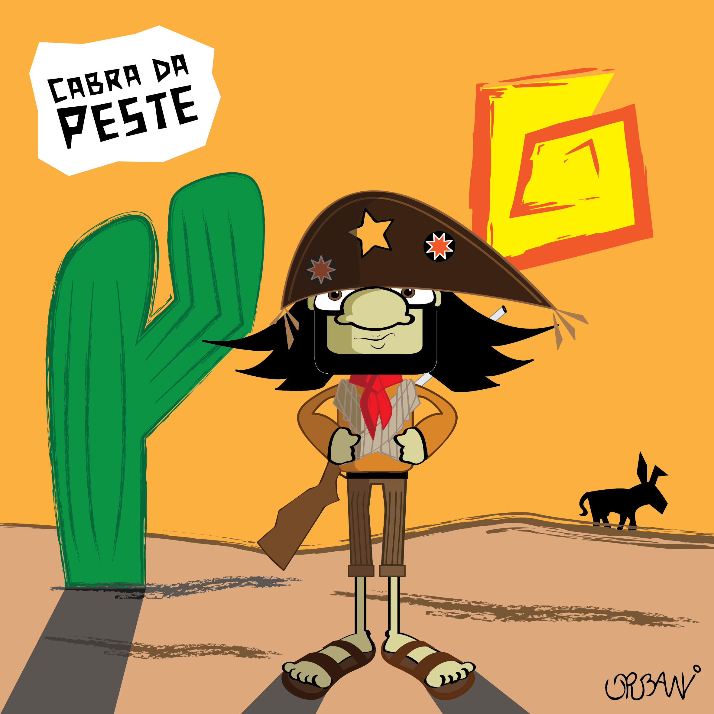

Dicionário do Nordestino
Letra C

CABRA DA PESTE - Indivíduo destemido, provocador ou valentão.
CABRA SAFADO - Indivíduo de atitudes incorretas.
CABRA-MACHO - Indivíduo destemido, provocador ou valentão.
CABRUNCO - Carbúnculo. Coisa ruim.
CABRUNQUENTO - Coisa ou pessoa ruim.
Voltar | Mais